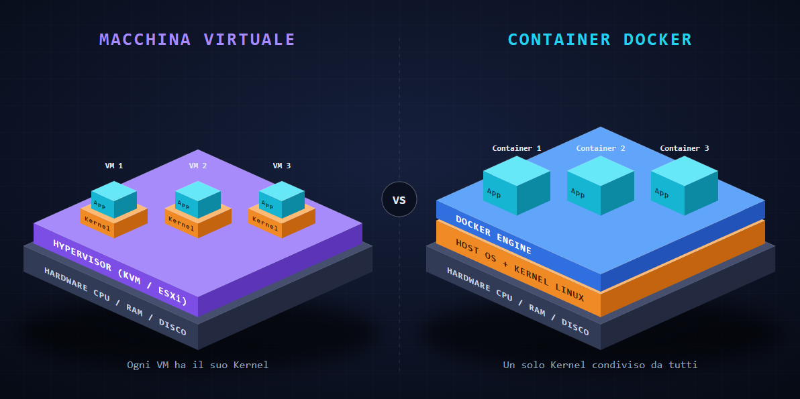
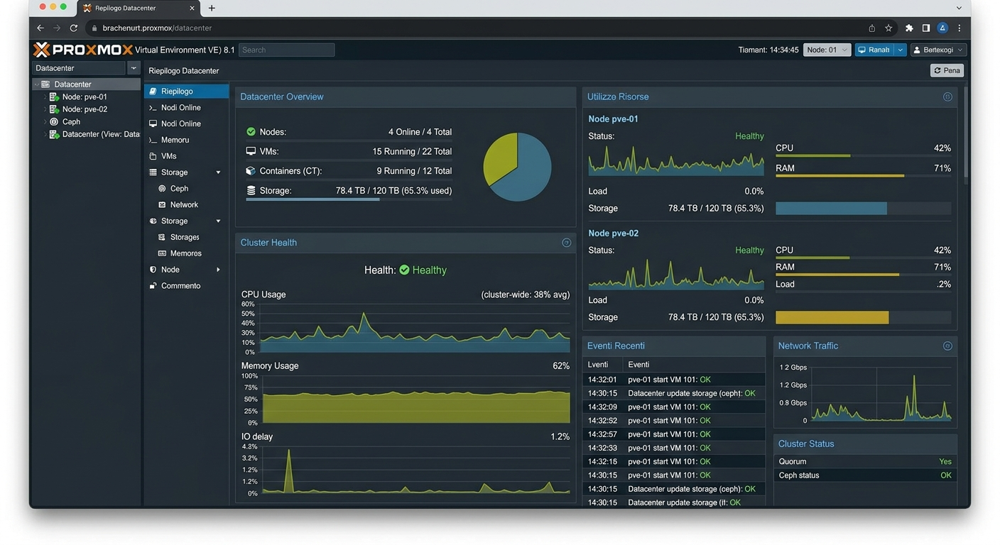
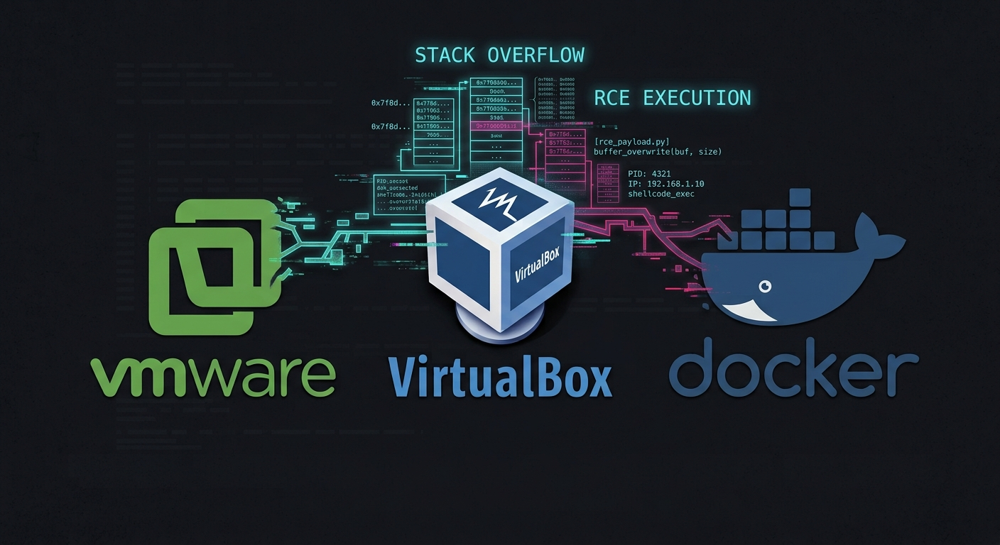

"Alla fine Docker è come una Macchina Virtuale, ma parte più in fretta". Questa è una delle incomprensioni più diffuse e pericolose nei reparti IT e DevOps. Se dal punto di vista dello sviluppatore l'esperienza d'uso può sembrare simile un ambiente isolato in cui eseguire software sul piano dell'architettura di sistema e della sicurezza difensiva le due tecnologie si basano su paradigmi opposti.
Trattare un container con la stessa mentalità con cui si gestisce una VM porta inevitabilmente a scelte infrastrutturali errate, finti sensi di sicurezza e, nel peggiore dei casi, a gravissime compromissioni dell'intero server fisico.
L'equivoco del Kernel Astrazione Hardware vs Isolamento ProcessiLa differenza fondamentale risiede nel livello di astrazione del sistema e nella gestione dell'interfaccia con le componenti fisiche del server (CPU, RAM, dischi e schede di rete).
Una Macchina Virtuale emula completamente un computer fisico. L'Hypervisor (sia esso un software di tipo bare-metal come ESXi e Proxmox KVM, o di tipo hosted) crea una barriera rigida interponendosi tra l'hardware reale e la VM. Ogni Macchina Virtuale esegue un sistema operativo completo con un proprio Kernel indipendente totalmente separato da quello dell'host.
Un Container Docker non virtualizza alcun hardware e non possiede un Kernel proprio. Un container è semplicemente un processo applicativo del sistema operativo host che viene fatto girare all'interno di un recinto logico isolato. Tutti i container presenti su un server condividono direttamente il medesimo Kernel dell'host.

Senza l'emulazione di un computer, Docker si affida a due meccanismi nativi del Kernel Linux per garantire l'illusione dell'isolamento:
- Namespaces (Visibilità dei confini): Stabiliscono ciò che un processo può vedere. Isolano la lista dei processi di sistema, l'albero delle directory del file system, le interfacce di rete, la gestione degli utenti e il nome dell'host. Un processo nel container vede solo le risorse assegnate al proprio perimetro.
- Control Groups (Limiti di risorse): Stabiliscono ciò che un processo può consumare. Definiscono le soglie massime di CPU, RAM e risorse di I/O utilizzabili, evitando che un singolo servizio saturi l'intero server.
Per visualizzare meglio queste differenze basta osservare la coesistenza dei vari livelli di virtualizzazione all'interno di una piattaforma di gestione come Proxmox VE:
- VM KVM (Virtualizzazione Completa): Assegna risorse in modo hardware-assisted e avvia un Kernel autonomo. Consente di eseguire qualsiasi sistema operativo (Linux, Windows, BSD) con totale separazione dall'host.
- Container LXC (Container di Sistema): Condivide il Kernel del nodo host ma avvia un ambiente operativo completo con tutti i servizi di sottofondo (gestione utenti, log di sistema, servizi di rete).
Docker spinge questo concetto oltre focalizzandosi sul Container d'Applicazione: invece di emulare un intero sistema operativo di supporto, racchiude e gestisce un singolo processo applicativo destinato a nascere e morire con l'applicazione stessa.

Nel panorama dell'infrastruttura IT convivono diverse tecnologie di virtualizzazione e containerizzazione, ciascuna progettata per specifici scenari d'uso e con livelli di isolamento ben distinti:
- VMware ESXi / vSphere: Hypervisor di Tipo 1 (bare-metal) di livello enterprise. Si installa direttamente sull'hardware fisico senza un sistema operativo sottostante. Garantisce il massimo livello di prestazioni, isolamento e gestione centralizzata per macchine virtuali critiche in ambienti aziendali.
- Proxmox VE: Piattaforma open-source basata su Debian che unisce l'hypervisor KVM per le Macchine Virtuali e i container LXC per i container di sistema. Rappresenta una delle soluzioni più flessibili e diffuse sia nei lab personali che nelle infrastrutture aziendali.
- Oracle VirtualBox: Hypervisor di Tipo 2 (hosted) che viene eseguito come un'applicazione all'interno di un sistema operativo desktop (Windows, macOS, Linux). È ideale per test locali e ambienti di sviluppo individuali, ma non adatto per ambienti di produzione.
- Docker Engine: La piattaforma di containerizzazione di applicazioni più diffusa. Concentra l'isolamento attorno a un singolo processo o servizio, riutilizzando il Kernel Linux dell'host tramite Namespaces e Control Groups per massimizzare la velocità di avvio e l'efficienza delle risorse.
- LXC (Linux Containers): A differenza di Docker, LXC crea container di sistema. Offre un ambiente molto simile a una VM classica (con il proprio init, gestione utenti e servizi di background) ma condividendo comunque il Kernel del server host.
- Podman: Un'alternativa daemonless a Docker promossa da Red Hat. Aumenta la sicurezza eseguendo i container di default senza privilegi di root (rootless) e integrando la gestione dei Pod tipica dell'ecosistema Kubernetes.

A differenza delle VM, che allocano dischi virtuali monolitici e rigidi, Docker gestisce i file tramite un'architettura a strati sovrapposti guidata da driver di archiviazione come Overlay2:
- Strati dell'Immagine (Sola Lettura): I file di base dell'applicazione sono immutabili e condivisi. Se dieci container utilizzano la stessa immagine di base, lo spazio occupato su disco viene conteggiato una sola volta.
- Strato del Container (Lettura e Scrittura): Un sottile livello modificabile applicato al di sopra dell'immagine per accogliere le modifiche temporanee del processo.
- Copy-on-Write: Se un processo all'interno del container modifica un file dell'immagine, questo viene duplicato al volo nello strato modificabile prima di applicare le variazioni.
Poiché lo strato modificabile viene distrutto con l'eliminazione del container, I dati che devono sopravvivere alla ricreazione del container devono essere conservati tramite un meccanismo di storage persistente, come Docker volumes o bind mounts, anziché nel writable layer del container.
L'aspetto più critico dell'architettura dei container riguarda la sicurezza e l'esposizione alle minacce. Poiché le due tecnologie si separano dall'hardware a livelli diversi, la superficie d'attacco risultante è radicalmente differente.
In una Macchina Virtuale, se un software vulnerabile viene compromesso tramite un attacco remoto, l'aggressore ottiene il controllo esclusivo del sistema operativo Guest. Per poter uscire dalla VM e infettare l'host fisico o altre macchine adiacenti, deve sfruttare una vulnerabilità dell'Hypervisor (VM Escape). Si tratta di difetti estremamente complessi e rari nelle infrastrutture moderne.
In un Container Docker,L'isolamento di un container dipende dal Kernel host e dai meccanismi di sicurezza che ne limitano l'accesso. Quando un'applicazione nel container viene compromessa, qualsiasi chiamata di sistema generata dall'attaccante viene ricevuta e processata direttamente dal Kernel del server host.
Le principali vulnerabilità della superficie d'attacco nei container:
- Superficie del Kernel Condiviso: Se il Kernel dell'host presenta un difetto di sicurezza non patchato, un exploit eseguito dentro un container vulnerabile può scalare i privilegi ed effettuare un Container Escape immediato, prendendo il controllo del server fisico e di tutti i container adiacenti.
- Esecuzione con Privilegi Elevati: Abilitare permessi estesi o modalità privilegiate sui container rimuove quasi tutte le barriere dei Namespaces. In questo stato, il container può interagire direttamente con i dispositivi hardware del server, caricare moduli del Kernel o rimontare il file system host con permessi di scrittura.
- Condivisione degli Spazi di Memoria e di Rete: Collegare il container alla rete dell'host o alla sua lista di processi annulla la separazione della memoria. Un utente malintenzionato può intercettare il traffico di rete degli altri servizi o ispezionare la memoria dei processi di sistema.
- Esposizione delle Interfacce di Controllo: Passare il controllo del socket di gestione di Docker all'interno di un container equivale a consegnare le chiavi di root del server. Chiunque comprometta quel container può avviare nuovi container privilegiati con accesso completo ai file dell'host.
- Identità degli Utenti e Corrispondenza delle UID: Di default, se un processo gira come utente amministratore dentro il container, il Kernel lo riconosce con le stesse credenziali dell'amministratore dell'host. Nella configurazione standard, senza user namespace remapping, UID 0 nel container corrisponde a UID 0 sull'host. Con user namespaces o Rootless mode questa relazione può essere modificata. In caso di evasione dal container, l'attaccante si ritroverà già in possesso dei massimi privilegi sul server.
- Rischio sulla Supply Chain e Immagini Base: Utilizzare immagini di terze parti non verificate o non aggiornate introduce librerie obsolete, porte di servizio nascoste o malware direttamente all'interno dell'infrastruttura di rete.
- Attacchi di Saturazione e Noisy Neighbors: Se i limiti di consumo di memoria e CPU non sono configurati con i cgroups, un container infetto o malfunzionante può esaurire le risorse del server, causando l'arresto immediato di tutti gli altri servizi ospitati.
La scelta tra Macchine Virtuali e Container non deve basarsi sulla comodità di sviluppo, ma sui requisiti di isolamento del carico di lavoro:
- Utilizza una Macchina Virtuale quando devi gestire ambienti con diversi livelli di fiducia (multi-tenancy), se devi eseguire sistemi con Kernel differenti (come istanze Windows o BSD) o se gestisci software legacy in cui l'isolamento hardware è un vincolo normativo o di sicurezza.
- Utilizza Docker per architetture a microservizi, applicazioni senza stato (stateless), ambienti di sviluppo riproducibili e servizi che necessitano di scalare rapidamente.
Nelle infrastrutture aziendali ad alte prestazioni, la strategia difensiva standard unisce i punti di forza di entrambe le tecnologie: cluster di nodi Docker o Kubernetes distribuiti all'interno di Macchine Virtuali isolate, garantendo così sia la flessibilità dei container sia la sicurezza di un confine hardware virtualizzato.